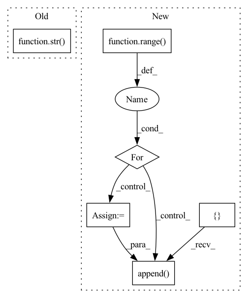

Pattern ID :39896
Before Change
os.environ["WORLD_SIZE"] = str(nprocs)
os.environ["LOCAL_WORLD_SIZE"] = str(nprocs)
os.environ["MASTER_ADDR"] = "127.0.0.1"
os.environ["MASTER_PORT"] = str( find_free_port())
os.environ["BAGUA_SERVICE_PORT"] = str(find_free_port())
results = [Result() for _ in range(nprocs)]
mp.spawn(After Change
mp = multiprocessing.get_context("spawn")
results = [Result() for _ in range(nprocs)]
processes = []
for i in range( nprocs):
p = mp.Process(
target=fn,
args=(i, nprocs, results, env),
)
p.start()
processes.append( p)
for p in processes:
p.join(timeout=60)
In pattern: SUPERPATTERN
Frequency: 3
Non-data size: 6
Instances Fragment ID: 113408807
Project Name: baguasys/bagua
Commit Name: a9529bef66e367884316a2b2ebc917ff35bf6334
Time: 2021-08-26
Author: 45031995+wangraying@users.noreply.github.com
File Name: tests/comm/test_communicator.py
M Class Name: AnonimousClass
N Class Name: AnonimousClass
M Method Name: run_test_locally(1)
N Method Name: run_test_locally(1)
M Parent Class:
N Parent Class:
M File Name: tests/comm/test_communicator.py
N File Name: tests/comm/test_communicator.py
M Start Line: 106
M End Line: 122
N Start Line: 115
N End Line: 138
Before Change
os.environ["LOCAL_WORLD_SIZE"] = str(nprocs)
os.environ["MASTER_ADDR"] = "127.0.0.1"
os.environ["MASTER_PORT"] = str(find_free_port())
os.environ["BAGUA_SERVICE_PORT"] = str( find_free_port())
mp.spawn(
run_model,
nprocs=nprocs,After Change
}
mp = multiprocessing.get_context("spawn")
processes = []
for i in range( nprocs):
p = mp.Process(target=run_model, args=(i, env))
p.start()
processes.append( p)
for p in processes:
p.join(timeout=60)
Fragment ID: 113408810
Project Name: baguasys/bagua
Commit Name: a9529bef66e367884316a2b2ebc917ff35bf6334
Time: 2021-08-26
Author: 45031995+wangraying@users.noreply.github.com
File Name: tests/torch_api/test_async_model_average.py
M Class Name: TestAsyncModelAverage
N Class Name: TestAsyncModelAverage
M Method Name: test_algorithm(1)
N Method Name: test_algorithm(1)
M Parent Class: unittest.TestCase
N Parent Class: unittest.TestCase
M File Name: tests/torch_api/test_async_model_average.py
N File Name: tests/torch_api/test_async_model_average.py
M Start Line: 62
M End Line: 76
N Start Line: 68
N End Line: 87
Before Change
lang_pred = torch.argmax(torch.softmax(lang_logits, dim=1), dim=1).item() // from 0 to len(languages) - 1
lang_group_pred = torch.argmax(torch.softmax(lang_group_logits, dim=1), dim=1).item()
return lang_dict[str(lang_pred)], lang_group_dict[str( lang_group_pred) ]
class VADiterator:After Change
srtd = torch.argsort(softm, descending=True)
srtd_group = torch.argsort(softm_group, descending=True)
outs = []
outs_group = []
for i in range( top_n):
prob = round(softm[srtd[i]].item(), 2)
prob_group = round(softm_group[srtd_group[i]].item(), 2)
outs.append( (lang_dict[str(srtd[i].item())], prob))
outs_group.append((lang_group_dict[str(srtd_group[i].item())], prob_group))
return outs, outs_group
Fragment ID: 113408811
Project Name: snakers4/silero-vad
Commit Name: 2939077a90605e06ae84efb2c6f66fdfd5acb675
Time: 2021-07-12
Author: dvoronin322@gmail.com
File Name: utils_vad.py
M Class Name: AnonimousClass
N Class Name: AnonimousClass
M Method Name: get_language_and_group(6)
N Method Name: get_language_and_group(5)
M Parent Class:
N Parent Class:
M File Name: utils_vad.py
N File Name: utils_vad.py
M Start Line: 340
M End Line: 343
N Start Line: 336
N End Line: 355